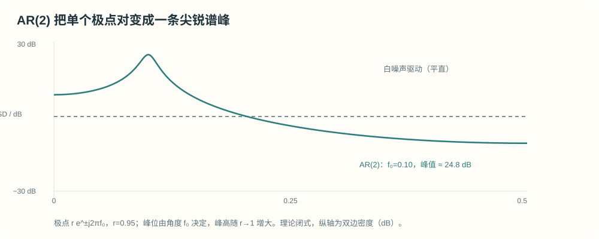
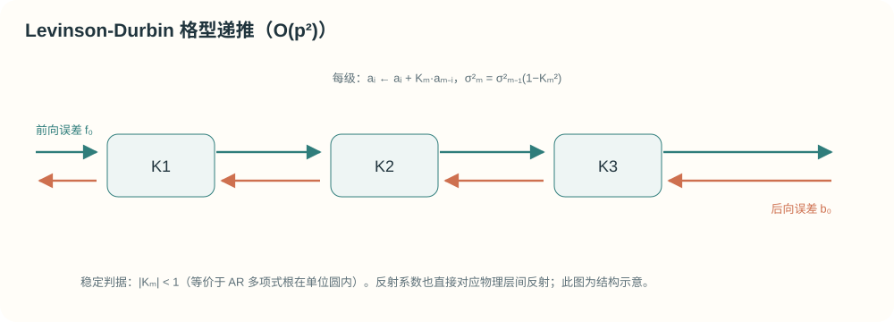
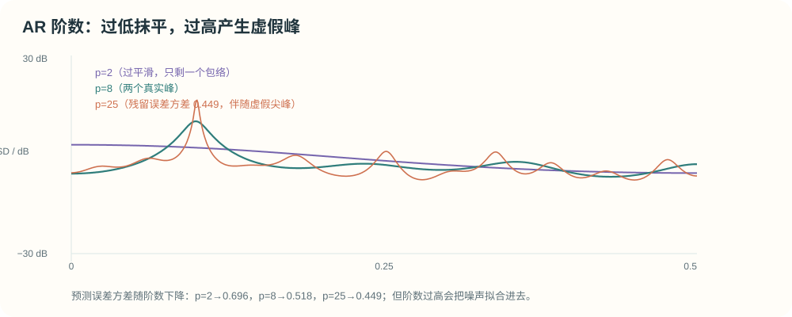
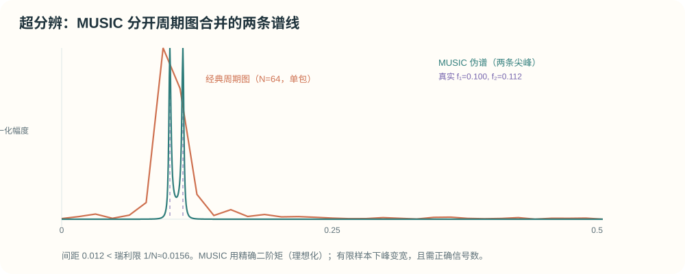

CHAPTER 24 · 统计推断与应用
现代功率谱估计
经典方法的分辨率被数据长度锁死在瑞利限 1/T 附近。参数化模型与子空间方法改用“信号由什么模型生成”这一先验，从有限甚至很短的数据里得到尖锐谱峰——代价是对模型假设与阶数选择的强依赖。
- 写出 AR(p) 模型与其闭式功率谱，说明系数符号与归一化约定
- 由 Yule-Walker 方程和 Levinson-Durbin 递推求 AR 参数并判断稳定性
- 解释 Burg 法相对 Yule-Walker 的改进与谱线分裂风险
- 说明 MUSIC 的子空间正交原理、超分辨代价与“伪谱”含义
瑞利限：经典方法的硬墙
第 23 章末尾留下一个问题：若两个正弦分量的频率只差很小的 Δf，经典方法能否分开？答案取决于观测时长。用矩形窗时，两条谱线的第一零点相距约 1/T（T 为观测时长，以秒计），这就是瑞利限：
要分辨 100 Hz 与 101 Hz、采样率 1000 Hz，就至少需要约 1000 个样本（1 秒）。如果信号只稳定存在 0.3 秒呢？无论怎么加窗、怎么平均，经典方法都无法突破这道墙：它只利用数据的二阶统计信息，没有引入任何关于“信号是什么形状”的先验。
现代方法换了一个假设：信号由一个有限维参数模型生成。只要模型形式正确，就能从参数里“外推”出窗外信息，从而获得超出 1/T 的分辨能力。本章讲两条主流路线：参数化 AR 模型与子空间方法（MUSIC）。
术语约定：本章离散频率 f 以“周/样本”为单位，取值 [0,1/2]；若无特殊说明，谱公式给出的是双边密度，比较单边测量值时需乘以 2（DC 与 Nyquist 处除外）。符号约定与第 23 章一致。
AR 模型：用过去的 p 个值预测现在
自回归（AR, autoregressive）模型假设当前值是过去 p 个值的线性组合加白噪声激励：
其中 w[n] 是零均值白噪声，方差 σ²；这里采用 +ak 的符号约定，因此预测形式为 x̂[n]=−∑akx[n−k]。定义多项式 A(z)=1+∑k=1pakz−k，则由白噪声通过全极点滤波器得到：
与周期图对数据做变换不同，AR 谱是对模型做变换：参数由全部数据联合估计，因而曲线平滑、方差小。但若真实信号不是 AR 过程，结果会系统性失真。

AR 谱不是“更真的谱”。它只是在 AR 假设成立时对谱的一致估计。若信号含纯正弦（谱为 Dirac 线谱），严格说它不属于有限阶 AR 过程；AR 谱只能用尖锐峰去近似线谱。
Yule-Walker 方程：从自相关求系数
把 AR 方程两边乘以 x[n−m] 并取期望，利用宽平稳性 E[x[n]x[n−m]]=R(m)，得到一组线性方程（m=1…p）：
系数矩阵是对称、正定的托普利兹（Toeplitz）矩阵：每条对角线上的元素相同。白噪声方差为 σ²=R(0)+∑k=1pakR(k)。实际中 R(k) 未知，用有偏样本自相关 R̂(k)=N−1∑nx[n]x[n+k] 代入，这等价于对数据加了矩形窗，因此低阶自相关也会带偏差。
Levinson-Durbin 递推与 Burg 法
解 p 阶托普利兹系统直接需要 O(p³)，但利用托普利兹结构可以降到 O(p²)。Levinson-Durbin 算法从 1 阶开始逐级递推，每一级引入一个反射系数 Km：
系数更新为 ai←ai+Kmam−i（旧阶系数），并新增 am=Km。因为 σm²≥0 要求 |Km|≤1，所以递推天然可做稳定性判据：所有 |Km|<1 等价于 AR 多项式 A(z) 的根都在单位圆内。

Burg 法绕开显式自相关估计：它直接选择 Km 使前向与后向预测误差的平均功率最小，因此没有加窗偏差，对短数据更稳，且仍保证 |Km|<1。代价是：对含正弦的数据，Burg 法可能出现谱线分裂——一个真实分量被拆成两个相邻虚假峰。

阶数怎么选：常用 AIC、BIC 或最终预测误差（FPE）准则给出参考范围，再结合物理先验确认。一个稳健的启发是：随阶数稳定出现的峰更可信，位置随阶数跳动的峰多半是虚假的。
子空间方法：MUSIC 的超分辨
若信号由 p 个正弦加白噪声组成，用 M>p 个滞后构造自相关矩阵 R=E[xxH]（x[n]=[x[n],…,x[n−M+1]]T）。它可写为
其中导向矩阵 A=[a(f1),…,a(fp)]，a(f)=[1,ej2πf,…,ej2πf(M−1)]T，P 为各分量功率。对 R 做特征分解：前 p 个大特征值张成信号子空间，后 M−p 个（近似相等，都约等于 σ²）张成噪声子空间。关键事实：两个子空间正交，即真实导向矢量 a(fk) 与每个噪声特征向量 vn 正交。于是定义伪谱：

三个必须说明的限制：其一，MUSIC 输出的是伪谱，纵轴不代表真实功率，只能定位频率；其二，它必须已知信号数 p，估错会漏峰或产生虚假峰；其三，超分辨需要足够高的信噪比与足够的快拍数，有限样本下峰会展宽。现实中通常先用 Welch 等稳健方法定位大结构，再用 MUSIC 在关心频段“放大”。
可复现核查
下面用纯 Python（无第三方依赖）复现本章关键数值：AR(2) 谱峰位置与高度、Levinson-Durbin 的稳定性与 Yule-Walker 残差、MUSIC 对短记录两音的超分辨。
import math, cmath
def autocorr(x, p):
N = len(x)
return [sum(x[n] * x[n + k] for n in range(N - k)) / N for k in range(p + 1)]
def levinson(R, p):
a = [1.0] + [0.0] * p
K, e = [], R[0]
for m in range(1, p + 1):
km = -(R[m] + sum(a[i] * R[m - i] for i in range(1, m))) / e
K.append(km)
anew = a[:]
for i in range(1, m):
anew[i] = a[i] + km * a[m - i]
anew[m] = km
a, e = anew, e * (1 - km * km)
return a, K, e
# AR(2) 理论峰：f0=0.10, r=0.95
a = [1.0, -2 * 0.95 * math.cos(2 * math.pi * 0.10), 0.95 ** 2]
vals = [1.0 / abs(1 + a[1] * cmath.exp(-2j * math.pi * f)
+ a[2] * cmath.exp(-4j * math.pi * f)) ** 2
for f in [i / 4000 for i in range(1001)]]
peak_f = [i / 4000 for i in range(1001)][vals.index(max(vals))]
assert abs(peak_f - 0.10) < 0.005
assert abs(10 * math.log10(max(vals)) - 24.8) < 1.0
检查点：AR(2) 谱峰位于 f0=0.10、峰值约 24.8 dB；对 N=128 数据做 p=8 的 Levinson 递推，所有 |Km|<1（实测最大值 0.457），预测误差方差随阶数下降（0.696→0.518→0.449），且系数满足各阶 Yule-Walker 方程（残差 <1e-9）；MUSIC 把间距 0.012（小于 1/N≈0.015625）的两音分为两条尖峰，而同一数据的周期图只有一个包。测试文件 examples/test_chapter_24.py 复用同一构造。
边界与陷阱
- 模型假设就是一切。AR 谱只在真实过程近似 AR 时可靠；MUSIC 只在“少数正弦 + 白噪声”下成立。模型失配会比经典方法错得更严重。纯正弦的谱含 Dirac 线，严格说不是有限阶 AR 过程，AR 只能用尖峰去近似。
- 阶数 / 信号数是关键参数。AR 阶数过低会抹平真实峰，过高会把噪声拟合成虚假峰；MUSIC 估错信号数会漏峰或冒出虚假峰。两者都需 AIC/BIC 或物理先验辅助。
- Burg 的谱线分裂。对含正弦的数据，Burg 法可能把一个真实分量拆成两个相邻虚假峰；这是算法特性，不是信号真实结构。
- 伪谱不含幅度。MUSIC 纵轴无功率含义，只定位频率；需要幅度/相位时应在定位后用最小二乘专估。
- 超分辨有门槛。分辨能力依赖信噪比与快拍数；低信噪比、少快拍或源相关（相干）时，子空间方法会退化，甚至不如 Welch 稳健。
- 自相关估计方式影响结果。有偏、无偏、协方差三种样本自相关给出不同的 Yule-Walker 解；短数据下 Yule-Walker 可能不稳定，此时应改用 Burg 或 Marple 等格型方法。
- 约定需对齐。AR 系数符号、双边/单边密度、dB 参考都需与参考实现核对，否则谱高会差常因子或镜像。
下一章转向自适应滤波：当信号与噪声的统计特性随时间变化时，如何在线调整滤波器系数去跟踪它们。
参考与核查依据
- S. M. Kay, Modern Spectral Estimation: Theory and Application, Prentice Hall, 1988：AR/ARMA 谱估计、Levinson 递推与阶数选择准则。
- J. P. Burg, “Maximum Entropy Spectral Analysis,” 37th Annual Int. Meeting, Soc. Explor. Geophys., 1967：Burg 法与最大熵谱估计的原始来源。
- R. O. Schmidt, “Multiple Emitter Location and Signal Parameter Estimation,” IEEE Trans. Antennas and Propagation, 1986（doi:10.1109/TAP.1986.1143830）：MUSIC 算法原始论文。
- P. Stoica & R. Moses, Spectral Analysis of Signals, Prentice Hall, 2005：参数化与子空间方法的统一处理与分辨极限。
- M. H. Hayes, Statistical Digital Signal Processing and Modeling, Wiley, 1996：AR 模型、Yule-Walker 与格型滤波。
- MIT OpenCourseWare · Signals, Systems and Inference：参数化谱估计与子空间方法。